45–60 min portfolio walkthrough · lo-fi outline
Product designer and engineer. I connect decisions to outcomes — especially when the problem is messy and the team is small.
Qualtrics · Survey Builder (~250k MAU) → looking for ownership, faster iteration, data-driven product
Agenda ~1 min
Project 1 · Qualtrics · Survey Builder
That was the real problem. Not “improve Expert Review.”
Hook + outcome upfront 90 sec
…to Errors / Warnings / Tips in context while you build.
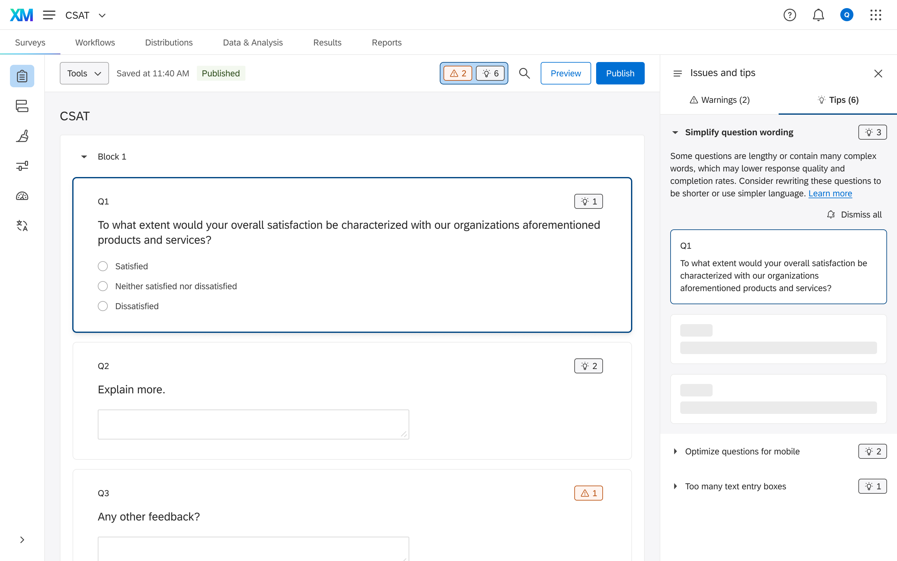
Situation
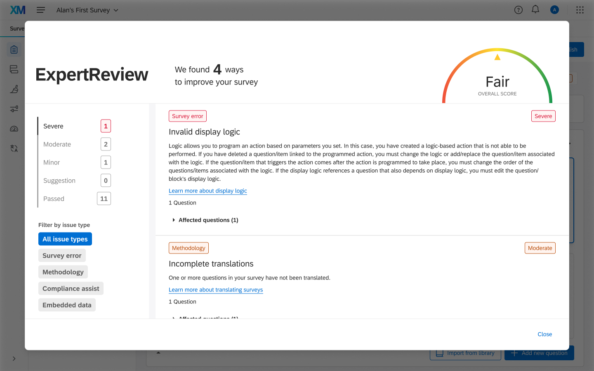
Evidence
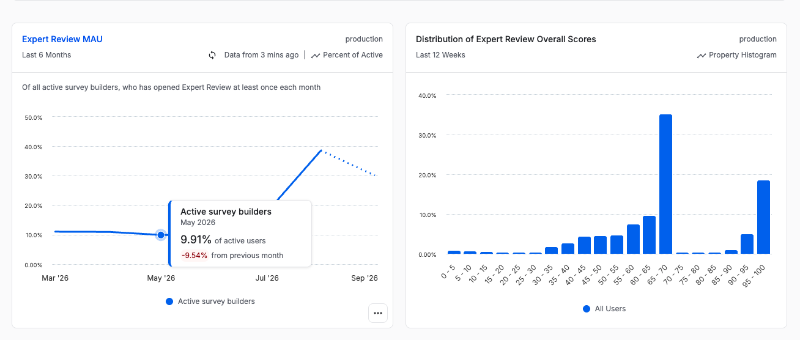
Role & constraints
Designer owning the framework + interaction direction. PM on leave early on. Partnered with research later. Designer-owned UI implementation at the end.
Scale (expensive to unwind a pattern). Existing Expert Review metrics. Org appetite for blocking publish. Need something AI could inherit later.
Decision 1 of 3 5–8 min
Error / Warning / Tip — clear rules for ~60 cases. Errors block collection; Warnings compromise; Tips improve.
Add more metrics / tweak the health score. Wouldn’t fix trust — just more opaque math.
A full quarter aligning severity (esp. Invalid Display Logic as Error vs Warning). Framework was the bottleneck; UI was comparatively easy.
Plot twist · research
They wouldn’t ship an untakeable survey — but they still hesitated to be blocked from Publish.
Decision 2 of 3
Right-hand side panel — see the issue and edit the question together.
Modal (status quo), left pane, inline feedback (preferred by some, distracting for power users).
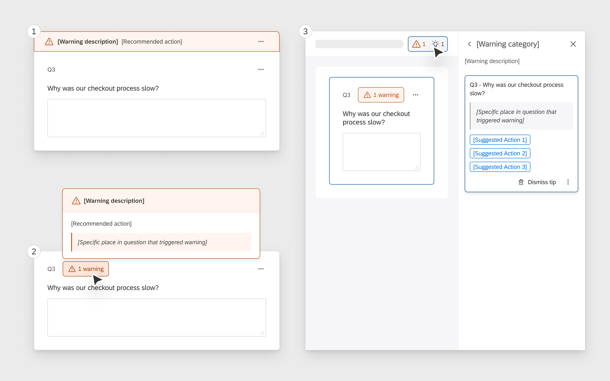
Three concepts. Right panel won for in-context building without leaving the canvas.
Decision 3 of 3 · how I validated
Collaboration · design system
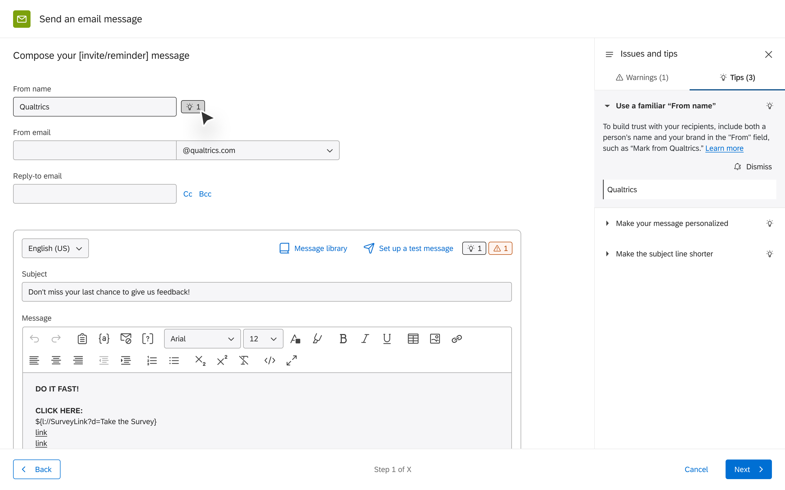
How it shipped
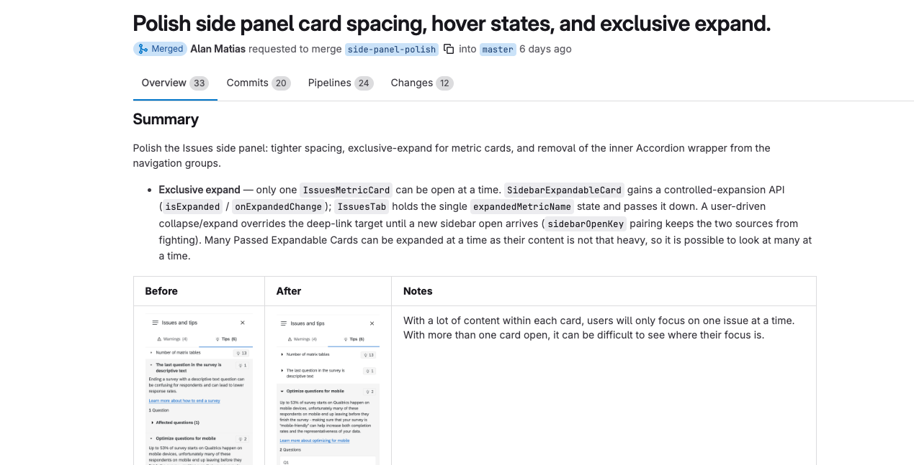
Results
Build this as guardrails inside an AI survey-building agent / AI side panel — not a separate classic guidance panel.
Co-design the framework with eng from day one — not deliver a finished taxonomy for review.
Project 2 · Ab Initio
Same company that sold on technical prestige. Different mandate overnight.
Outcome upfront 90 sec
Sole designer · 1 PM · 2 dev leads · ~15 developers
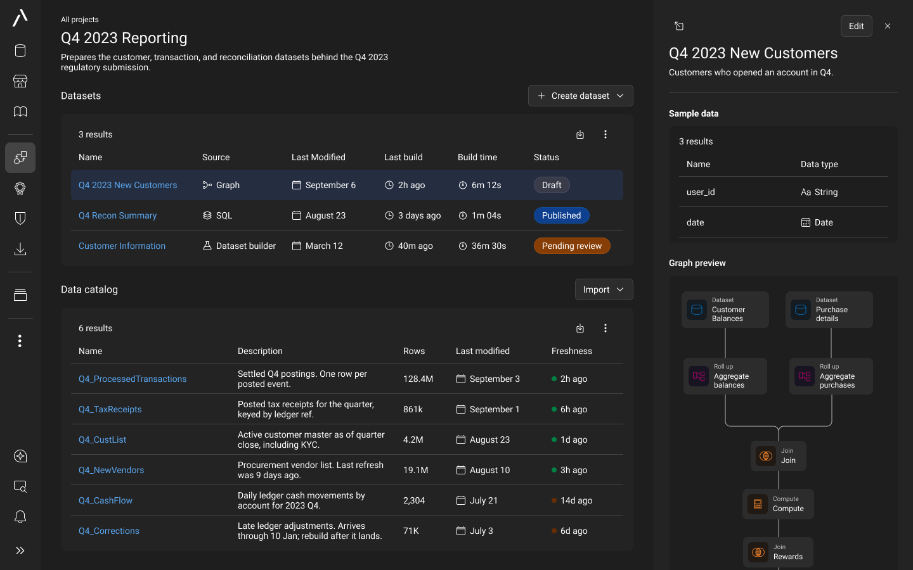
Situation
Find raw data → transform → schedule refresh. Every handoff lost context.
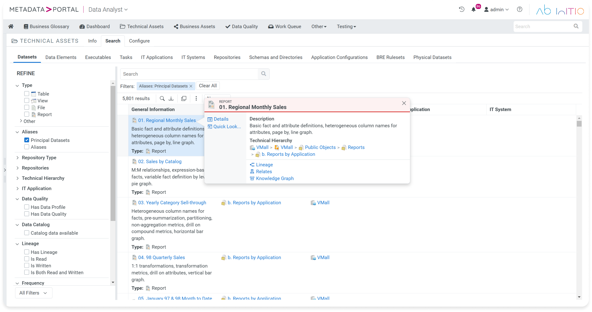
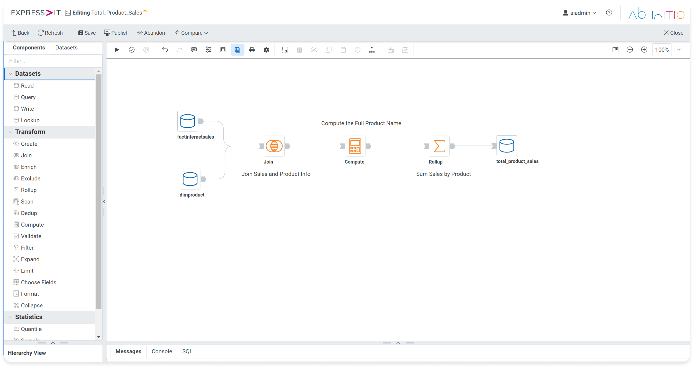
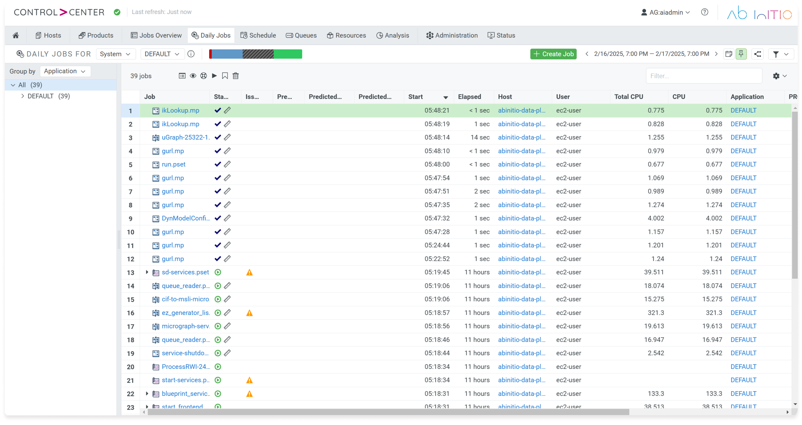
Task
Own the MVP experience for Crédit Agricole: turn PM’s multi-year vision into concrete flows we could debate against a hard deadline.
Technical feasibility. Weekly working group of ~15 — timeboxed agendas, lower-fi when talks drifted into implementation.
Decision 1 of 3
Find → transform → schedule as the MVP spine. Admin, approvals, org scale stayed on the longer vision.
Port every feature from three products into one shell. Looks “complete,” ships late, still incoherent.
Said no to a lot of “but we already have that.” Curated beat comprehensive for a six-month release.
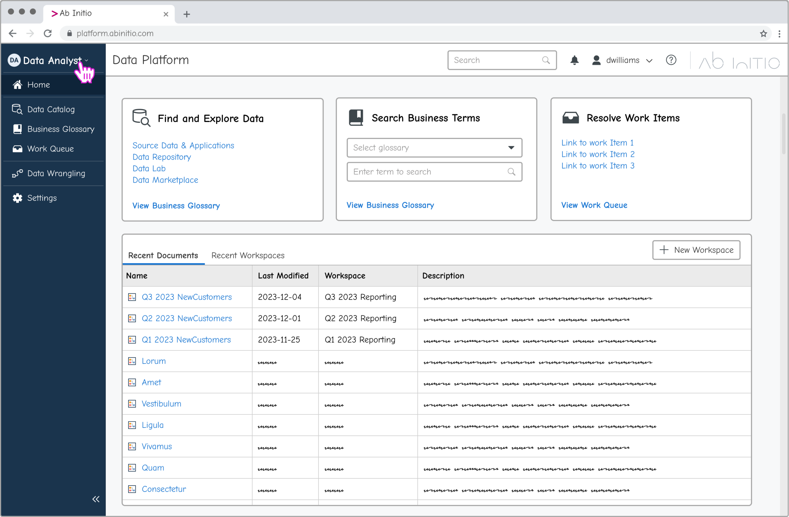
Working without research
Decision 2 of 3 · design system
QuickLook side panel for preview + context — better model for this product.
Reuse the legacy bottom-sheet inspect pattern for “consistency.”
Short-term visual inconsistency across products. Long-term candidate for the emerging design system.
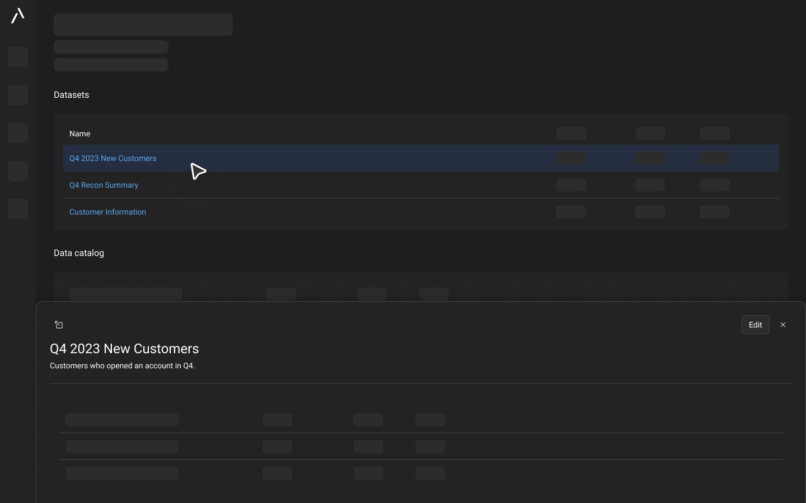
Legacy bottom sheet →
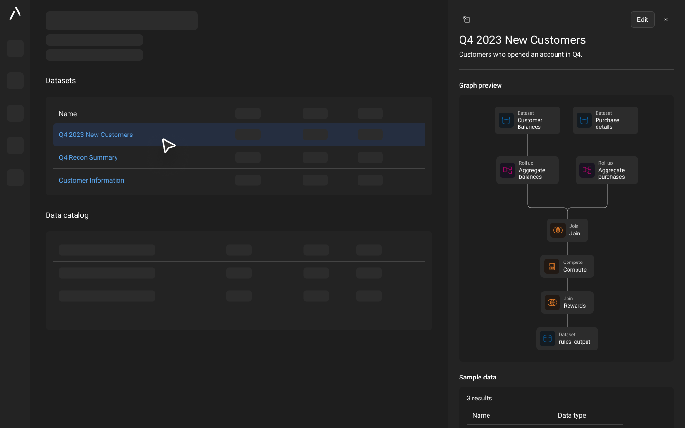
QuickLook side panel
Decision 3 of 3 · collaboration
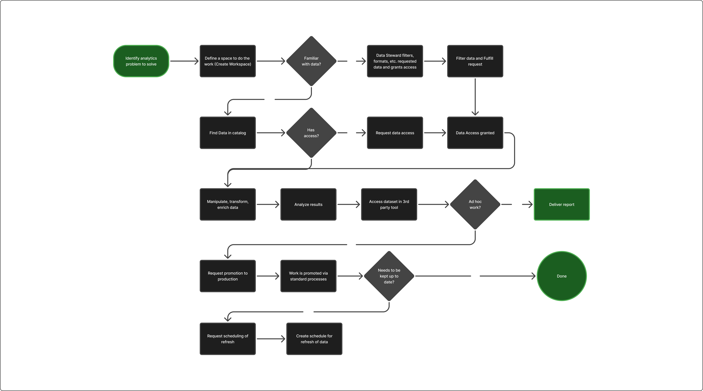
Results
Bring the customer into initial scoping — not only milestone reviews. I had a TAM close to them; I treated the customer as a consumer of the MVP instead of a co-author of requirements.
Through-line
Baseline → change. Usage, completion, time-to-value when we can instrument.
Name the alternative and the tradeoff out loud. That’s the interview.
Write assumptions down. Force scope early. Stay scrappy without pretending research existed.
Design thinking first; code when fidelity or handoff needs it.
Questions for them · pick 2–3
Storycraft checklist